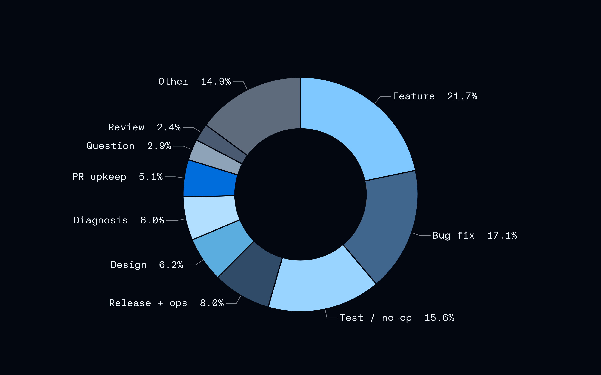
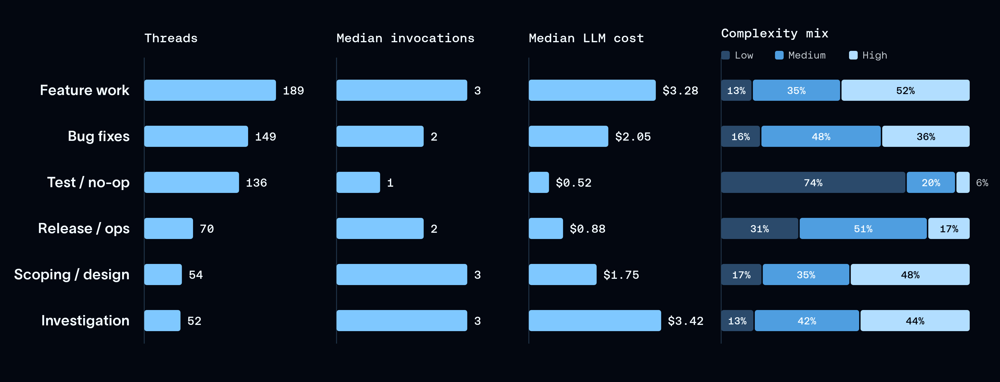
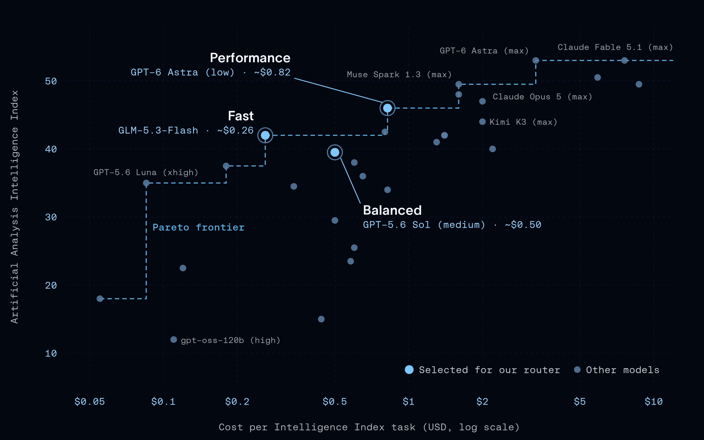
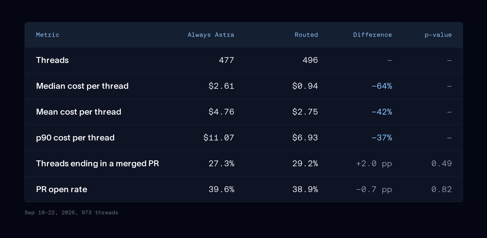
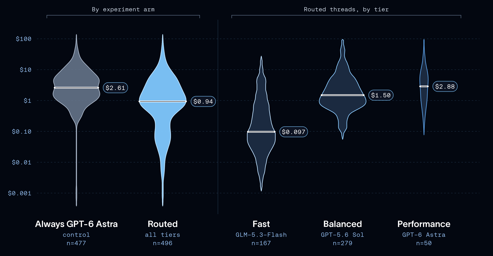

Executive summary
Route from evidence about your workload, not a generic model ranking
LangChain's Open SWE agent had been sending every coding request to a top-tier model. That was easy to operate but economically wasteful: asking a repository question, running a test, and implementing a difficult feature all paid the same intelligence premium. The team used production traces to map its task mix, selected three models along a cost-capability curve, and added a classifier to choose one model at the beginning of each thread.
In a randomized experiment covering 973 threads, routed work had a median LLM cost of $0.94 versus $2.61 for the control that always used GPT-6 Astra. The reported merged-PR and PR-open rates were not statistically distinguishable. This supports a practical claim: a heterogeneous coding workload can contain enough easy work for task-aware routing to reduce spend without an obvious quality loss. It does not establish that this router is optimal, that merged PRs fully measure code quality, or that the result transfers to other agents.
- Understand traffic before choosing tiers. The router criteria came from real Open SWE traces, not only public model benchmarks.
- Put task-aware policy near the harness. The harness knows the domain, tools, user request, and expected work; a generic gateway often sees only a model-shaped API call.
- Route to the cheapest sufficient model. The objective is constrained cost minimization, not predicting which model is globally “best.”
- Measure business outcomes. Cost is meaningful only beside a success signal such as merged PRs, review quality, task completion, or user acceptance.
- Keep an escalation path. A router will be wrong. Production design must detect under-routing and move work upward without losing state or repeating unsafe actions.
The data and charts are published by LangChain about its own internal use of Open SWE. The experiment is stronger than a testimonial because it reports sample size, controls, outcome rates, and p-values, but it is not an independent replication. Exact model names, prices, benchmark positions, and router behavior will change. Treat 64% as this experiment's result, not a universal routing discount.
Step 1 · Understand the tasks
Production traces reveal where frontier intelligence is being wasted
The team analyzed one week of interactive Open SWE threads from LangSmith. An LLM classifier grouped requests by title and metadata. New features represented 22% of threads, bug fixes 17%, and test or no-op runs 16%. Those labels are useful heuristics rather than ground truth, but they show that the workload is not one homogeneous “coding” task.

Cost and invocation count were used as rough complexity signals. Feature investigations tended to be longer and more expensive; testing and release procedures were generally shorter. Neither signal is a pure measure of difficulty. A weak model may create more turns because it is struggling, while a concise but dangerous migration could require few turns and still deserve the strongest reasoning and review controls.

Step 2 · Understand the models
Choose a small set of tiers with meaningfully different economics
LangChain started with the Artificial Analysis Intelligence Index, then chose three models at different points on the cost-intelligence curve. A public benchmark helped identify candidates; provider guidance and the observed Open SWE workload informed the final tier descriptions.

Fast
GLM-5.3-Flash at xhigh effort for straightforward questions, tests, small changes, and low-risk work.
Balanced
GPT-5.6 Sol at medium effort for ordinary feature and bug-fix work needing stronger reasoning.
Performance
GPT-6 Astra at low effort for complex, ambiguous, or high-stakes requests where failure is expensive.
The names matter less than the spacing. If two tiers have similar price and capability, a classifier call and cache loss can consume the expected savings. A useful tier set has a clear economic gap, a measurable capability boundary, and models that satisfy the same tool, context, structured-output, security, and data-residency requirements.
Step 3 · Build the router
The routing decision is a typed policy inside the harness
The Open SWE router runs once on the first human message. Its base instruction asks for the least expensive model likely to finish the task. Plain-language criteria describe each tier, and a classifier returns the selected tier as structured output. The first version used a general LLM; the current implementation uses Jev, which LangChain reports made classification nearly 50 times faster.
LangChain implements the choice as middleware, so the agent's surrounding workflow remains unchanged while the model binding is replaced. This is a clean ownership boundary: the agent still owns task state and tools; the router owns a decision contract; provider adapters own model invocation.
Store the chosen tier, policy version, classifier version, features used, confidence, reason code, estimated cost, fallback, and escalation trigger. Without those fields, a cheaper answer cannot be distinguished from a silent routing mistake.
Harness versus gateway
Task policy belongs near the agent; provider governance can remain centralized
LangChain argues that routing belongs in the harness because the harness already knows the agent's domain, prompt, tools, and task semantics. That is persuasive for capability selection. A gateway that receives only a generic completion request may not know that a short message requests a production database migration.
The choice need not be binary. A platform can let the harness select a capability tier while a gateway enforces the allowed provider, region, budget, rate limit, failover, and audit policy. The harness answers “what level of reasoning does this task need?”; the gateway answers “which approved deployment can supply it now?”
| Concern | Harness | Gateway |
|---|---|---|
| Task meaning | Rich domain and workflow context | Usually limited request metadata |
| Capability tier | Best owner of task-fit policy | Can map tier to available deployment |
| Security and residency | Declares task constraints | Enforces organization-wide provider policy |
| Availability | Defines acceptable fallback behavior | Tracks health, quotas, and failover |
| Evaluation | Connects routing to task outcome | Measures provider latency, errors, and spend |
The experiment
Cost fell clearly; the reported quality metrics stayed statistically flat
The first A/B test randomized 973 threads between the router and a control that always used GPT-6 Astra. The router sent 56% of its threads to the balanced tier, 34% to fast, and 10% to performance. Median cost fell from $2.61 to $0.94. Mean cost fell 42% and p90 cost fell 37%, suggesting the reduction was not caused only by a handful of unusually cheap threads.


Critical reading
What the experiment does not prove
The main control was expensive
Always using the strongest model creates ample room for savings. The study shows that frontier-only was wasteful, not that this router is cheaper than every sensible fixed-model baseline.
The fast-only test was stopped early
Engineers reported immediate quality problems, but the test ended before statistical conclusions were possible. It is operational evidence, not a quantified comparison.
Merged PR is a proxy
Merge decisions reflect usefulness, task selection, reviewer behavior, and urgency. They do not directly measure defect rate, maintainability, security, or time spent correcting the patch.
Routing happened only once
A question can become a bug fix mid-thread. Fixed routing avoids cache loss and complexity but cannot react when the task changes or the selected model begins to fail.
Categories were model-generated
The task map is a useful exploratory artifact. Mislabeling and incomplete metadata can shape tier criteria before the router is ever evaluated.
Router overhead is part of economics
Classification latency, decision-model cost, lost prompt cache, duplicate work after escalation, and provider integration must be included in total cost and user latency.
Production blueprint
A model router is a governed decision service, not a clever prompt
Inputs
Task type, risk class, tools, expected context, artifact type, user role, latency SLO, budget, and data-residency constraints.
Decision
Capability tier, model policy, effort level, context limit, confidence, reason code, and policy version.
Fallback
Approved equivalent model for outages, plus explicit behavior when no compliant deployment is available.
Escalation
Trigger on repeated tool errors, failed tests, low-confidence decisions, user correction, risk increase, or budget overrun.
Observability
Record decision trace, model, tokens, cache status, latency, retries, tool trajectory, outcome, and reviewer intervention.
Evaluation
Maintain a frozen offline routing set and an online experiment with quality guardrails, rollback thresholds, and cohort checks.
For a multi-agent platform, route at the narrowest useful boundary. A Master Agent may need a balanced model for planning while a retrieval subagent uses fast inference and a production-change reviewer uses the performance tier. However, per-call routing can destroy cache reuse and make traces difficult to reason about. Start with per-thread or per-subagent routing, then introduce mid-flight changes only where failure data justifies them.
Business analysts should configure capability policy rather than provider names: “simple read-only lookup,” “standard analysis,” or “high-risk irreversible decision.” Platform owners then map those tiers to approved deployments. This keeps business intent stable when model rankings, prices, and vendors change.
Adoption sequence
A defensible way to introduce routing
- Instrument one fixed-model baseline and attach outcomes to complete agent traces.
- Cluster real traffic by task, risk, cost, latency, tool pattern, and failure mode.
- Choose two or three economically distinct tiers and verify tool-contract compatibility.
- Write explicit tier criteria and label a representative offline routing dataset.
- Run shadow routing first: record decisions without changing the serving model.
- Compare router choices with outcomes, reviewer overrides, and counterfactual model results where affordable.
- Launch a bounded A/B test with quality, safety, cost, and latency guardrails.
- Review routing mistakes by cohort and version the policy before expanding scope.
Sources and limitations
What this article is based on
- How to Build a Model Router in the Harness by Sydney Runkle and Eugene Yurtsev. This is the primary source for the Open SWE experiment, charts, and implementation description.
- Open SWE model-selection middleware for the source implementation referenced by the article.
- LangChain dynamic model-selection documentation for the middleware model-binding pattern.
- LangChain TypeSafe model-routing documentation for the current Jev integration.
- Building a Harness with Jev for background on typed decision models inside an agent harness.
Charts are reproduced from the LangChain source page and retain their original data labels. This summary did not access LangChain's raw thread data, independently reproduce the A/B analysis, or benchmark the three models. All economic and quality figures are therefore attributed to LangChain.